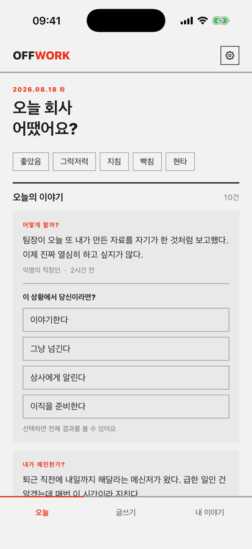
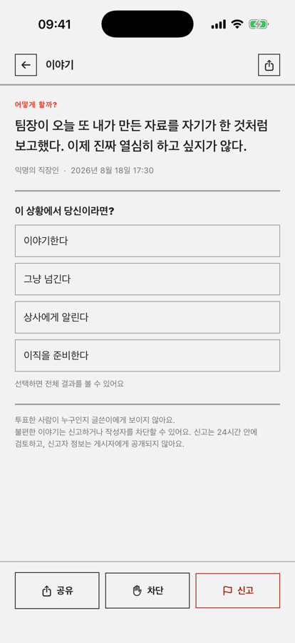
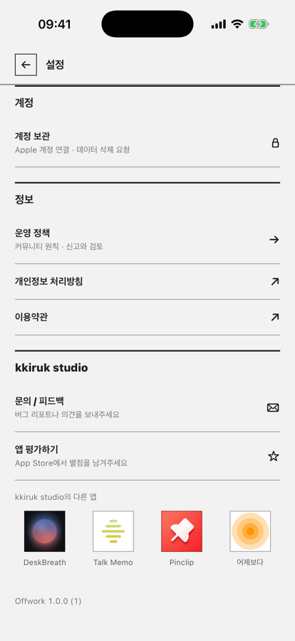

01
반응 방식을 먼저 고른다
그냥 들어줘 · 내가 예민한가? · 어떻게 할까? · 사람들이 어떻게 생각할까? 중 하나. 이 선택이 다른 사람이 답할 수 있는 유일한 방법이 됩니다.
조언도 훈수도 없습니다. 이야기를 쓸 때 반응 방식을 직접 고르면, 같은 자리에 있어 본 사람들이 그 선택지로만 답해요. 악플이 생길 자리가 없습니다.
팀장이 오늘 또 내가 만든 자료를 자기가 한 것처럼 보고했다. 이제 진짜 열심히 하고 싶지가 않다.
글 하나를 올리는 데 30초. 반응은 탭 한 번.
그냥 들어줘 · 내가 예민한가? · 어떻게 할까? · 사람들이 어떻게 생각할까? 중 하나. 이 선택이 다른 사람이 답할 수 있는 유일한 방법이 됩니다.
회사명·실명 같은 개인 정보와 욕설, 외부 링크는 게시 전에 자동으로 걸러집니다.
먼저 투표해야 전체 비율이 열립니다. 남의 의견에 휩쓸리기 전에 내 판단을 먼저 남겨요.
커뮤니티가 망가지는 자리를 아예 없앴어요.
“그건 네가 잘못한 듯”
누구도 당신에게 문장을 쓸 수 없습니다. 남길 수 있는 건 당신이 정한 선택지 하나뿐이에요. 그래서 조언도, 비난도, 싸움도 쌓이지 않습니다.
라디우스 없는 모더니스트 레이아웃. 읽는 데 방해되는 장식은 뺐습니다.



익명이라고 아무 말이나 할 수 있는 곳은 아닙니다.
욕설·혐오 표현, 전화번호·이메일 같은 개인 정보, 외부 링크는 게시되지 않습니다.
신고한 이야기는 그 자리에서 사라지고, 접수된 신고는 24시간 안에 검토합니다.
여러 명이 신고한 이야기는 사람이 검토하기 전에도 피드에서 내려갑니다.
불편한 작성자를 차단하면 그 사람의 이야기는 더 이상 보이지 않습니다.
이름·이메일·회사 정보를 저장하지 않고, 팔로우도 DM도 없습니다.
누가 어떤 선택을 했는지 글쓴이에게 보이지 않습니다.